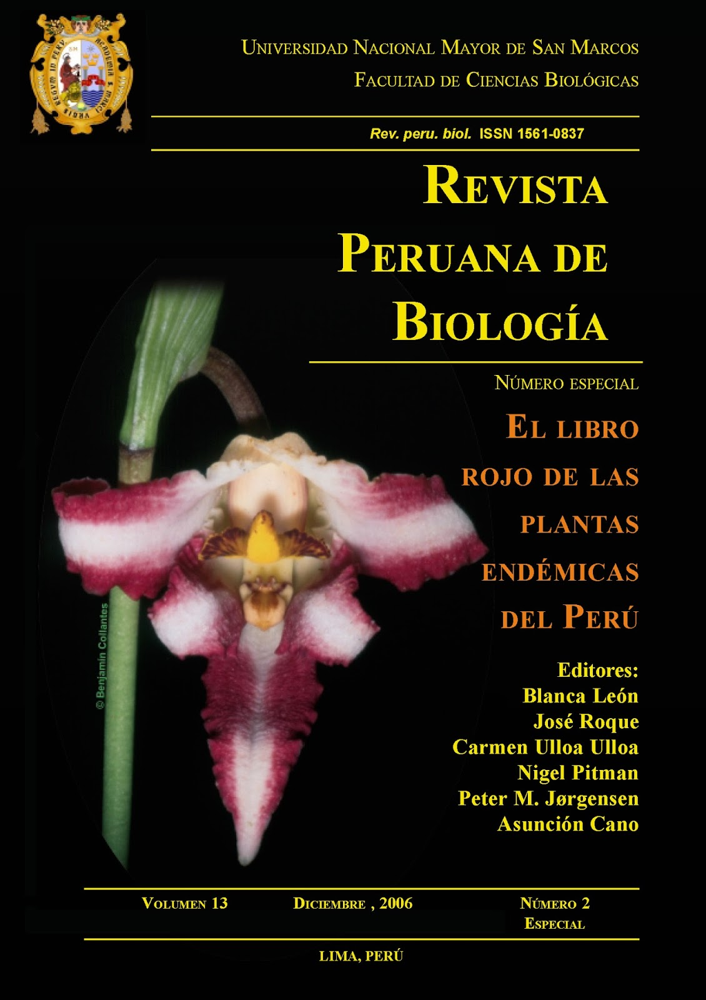

ppendemic 
…El libro rojo de las plantas endémicas del Perú constituye, en este aspecto una herramienta fundamental para determinar las medidas necesarias para la conservación de la flora peruana. - Kember Mejía Carhuanca
The flora of Peru is one of the richest in the New World, with over 14,000 species, and 5,508 taxa are treated as endemic. This represents a significant proportion of the South American flora, highlighting the importance of Peru in the conservation of New World flora.
The pandemic package takes the data from the The red book of endemic plants of Peru and update the taxonomic information for all species included using the Taxonomic Name Resolution Service api.
The goal of ppendemic is to provide access to the endemic plant species data in Peru.
Installation:
You can install the latest development version from GitHub with:
# install.packages("pak")
pak::pak("PaulESantos/ppendemic")About the data
Data were published and made available by the Revista Peruana de Biología in volume 13 and number 2 available here, on 2006. Edited by Blanca León et al.
Citation
To cite the ppendemic package, please use:
citation("ppendemic")
#>
#> To cite ppendemic in publications use:
#>
#> Santos-Andrade PE, Vilca-Bustamante LL (2021). ppendemic: The red
#> book of endemic plants of Peru data. R package version 0.1.4.
#>
#> A BibTeX entry for LaTeX users is
#>
#> @Manual{,
#> title = {ppendemic: The red book of endemic plants of Peru data},
#> author = {Paul Efren Santos Andrade and Lucely L. Vilca Bustamante},
#> year = {2021},
#> note = {R package version 0.1.4},
#> doi = {10.5281/zenodo.5106619},
#> url = {https://github.com/PaulESantos/ppendemic},
#> }References
Data originally published in:
- León, B., Pitman, N., & Roque Gamarra, J. E. (2006). Introducción a las plantas endémicas del Perú. Revista Peruana de Biologia, 13(2), 9s-22s. Here